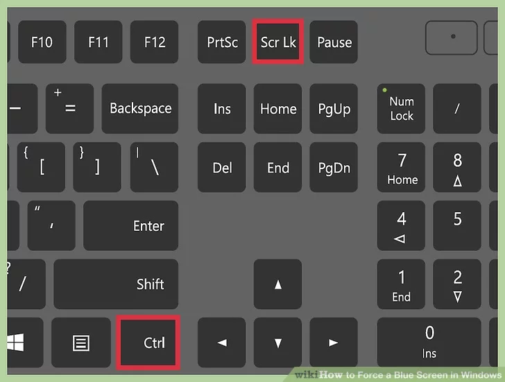

How to BSOD your computer/laptop in 2023
Before we start, please save any unsaved files. BSODs (Blue Screens Of Death) force-close all open programs and files without saving, so if you don't save you may lose some progress.
Way 1 (Killing wininit):
Step 1: Press the windows logo on the bottom left on your screen.
Step 2: Search "taskmgr"
Step 3: Right click on "taskmgr" or "Task Manager" and click "Run As Administrator"
Step 4: Go to the "Details" tab.
Step 5: Find "csrss.exe" or "wininit.exe".
Step 6: Right click on it and press "End Task"
Step 7: Tick the checkbox and press "End"
Way 2 (Editing the registry):
Step 1: Press the windows logo on the bottom left.
Step 2: Search "regedit" and run it.
Step 3: Now, you have to find out if your keyboard is a USB type or a PS/2 one. To find this out, check the cable of the keyboard. If it a rectangle it is an USB and if it is round it is a PS/2 one.
Step 4: If it is a PS/2 one, navigate to:
HKEY_LOCAL_MACHINE > SYSTEM > CurrentControlSet > services > i8042prt > Parameters
If it is an USB one, navigate to:
HKEY_LOCAL_MACHINE > SYSTEM > CurrentControlSet > Services > kbdhid > Parameters
Step 5: Right click and create a new "DWORD (x32)" parameter named "CrashOnCtrlScroll". Then, right click on the parameter and click "Edit". Set it to "1".
Step 6: Restart your computer. To make the BSOD happen, you have to hold down the right control button on your keyboard and press the Scroll Lock (Scr Lk) key twice.

BSOD - Da Crib